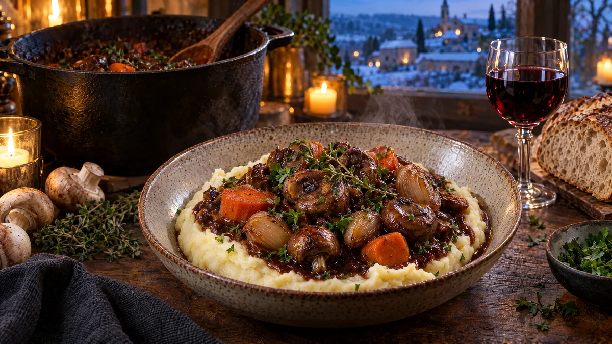

RESTFEST · RECEPTHuvudrätt
Champinjonbourguignon med schalottenlök och potatismos
Två askar champinjoner, ett par morötter och några schalottenlökar. Svampen bryns hårt tills den blir köttig och djupt gyllene, och puttrar sedan i en blank, mörk sås med rödvin, timjan och tomat. Grytan serveras i en grop av fluffigt potatismos. En fransk vintergryta helt utan kött, och ingen kommer att sakna det.
- Förberedelse
- 20 min
- Tillagning
- 50 min
- Portioner
- 4
- Nivå
- Medelsvårt
 Det här behöver du
Det här behöver du
JÄMFÖRT MED DIN KYL
Tryck på + vid det du behöver köpa.
Gryta
Potatismos
Till servering
Gör så här
- Skala schalottenlöken och dela stora lökar på mitten. Skala morötterna och skär dem i tjocka slantar, ca 1 cm. Skiva vitlöken. Dela champinjonerna, eller låt små vara hela.
- Hetta upp 2 msk olja i en stor gryta på hög värme. Bryn svampen i två omgångar, 5–6 minuter per omgång, tills den har släppt sin vätska och fått djupt brun färg. Rör inte för ofta. Lägg upp svampen.
- Sänk till medelvärme och hetta upp resten av oljan. Fräs lök och morötter i 5 minuter, tills löken har fått färg. Tillsätt vitlök och tomatpuré och fräs 1 minut till.
- Strö över mjölet och rör om. Häll i vinet lite i taget under omrörning och låt koka ihop i 2 minuter.
- Tillsätt vatten, buljongtärning, soja, lagerblad och timjan och lägg tillbaka svampen. Låt sjuda under lock på låg värme i 25–30 minuter, tills morötterna är mjuka och såsen är blank och har tjocknat. Ta upp lagerbladet och timjanstjälkarna och smaka av med salt och peppar.
- Koka potatisen under tiden. Skala den, dela den i bitar och koka den i saltat vatten i 15–20 minuter, tills den är mjuk. Häll av och låt ånga av i 1 minut.
- Mosa potatisen med potatisstöt eller pressa den genom en potatispress. Vispa ner margarinet och den varma havredrycken lite i taget, tills moset är fluffigt. Smaka av med salt och vitpeppar.
Dekoration och servering
- Bred ut moset i djupa tallrikar med en grop i mitten och skeda grytan i gropen.
- Strö över persilja och lägg en timjankvist ovanpå.
- Servera med en skiva surdegsbröd att torka upp såsen med.
- Grytan blir ännu godare dagen efter och går bra att frysa i portioner.
Mått och ugnstemperaturer
Måtten är svenska (dl, msk, tsk, krm). Ugnstemperaturerna gäller vanlig ugn med över- och undervärme; med varmluft, sänk med 20 grader.